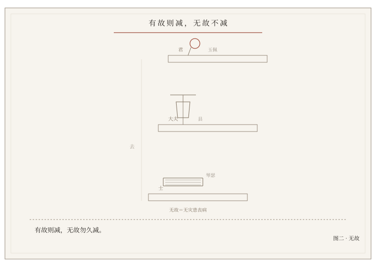

曲礼下 · 二·三十三 · 第 156 课
君无灾患丧病，玉佩不离身；大夫不撤钟磬；士不撤琴瑟。注「忧乐不相干也。故谓灾患丧病」。
说什么事：君无故玉不去身，大夫无故不彻县，士无故不彻琴瑟。
落在哪一层：礼，兼及礼意。上节是「有故则减」，此节是「无故不减」。
为何编在此位：紧接凶年贬损。有故与无故，一减一不减，合成一条完整的尺度。
【经】君無故玉不去身，大夫無故不徹縣，士無故不徹琴瑟。
【注】憂樂不相干也。「故」謂災患喪病。
【疏】此明无灾者也。君，诸侯也。玉谓佩也。君子于玉比德，故恒佩玉，明身恒有德也。且以玉为容饰，无故则有容饰，故佩玉也。「大夫无故不彻县」者，彻亦去也，无灾变则不去乐也。「士无故不彻琴瑟」者，此无灾则亦不去也。故郑前注士「不乐，去琴瑟」，取此文「琴瑟」，此是不命之士尔，若其命士，则特县也。自士以上，皆有玉佩。上云君无故不去玉，则知下通于士也；下言士不去琴瑟，亦上通于君也。但比德为重，故君上明之也。又大夫言县，士言琴瑟，亦互言耳。但县胜，故大夫言之也。注「忧乐」至「丧病」：灾，水火也。
无故 注「故谓灾患丧病」。无此四者，是为无故。
玉不去身 佩玉不离身。疏「君子于玉比德」，去玉则身无德之饰。
彻县 彻，去也。县，悬也，钟磬之属。撤乐。
琴瑟 士之乐。与县相对，县大而琴瑟小。
忧乐不相干 注语。忧自忧，乐自乐；不因一忧而废一切乐。
君无故（无灾患丧病），佩玉不离身；大夫无故，不撤钟磬；士无故，不撤琴瑟。
丧与灾，是礼许人停乐的时刻。此节从反面立一条通例：没有这些事，就不要停。丧礼使人静，此节使人不至于一静到底——忧与乐各归其位，不相牵累。
第一层 玉以比德 疏「君子于玉比德，故恒佩玉，明身恒有德也」。玉不去身，不是舍不得一块石头，是身上一直有一件提醒自己的东西。
第二层 三级各举其一 君举玉，大夫举县，士举琴瑟。疏说这是「互言」：上通于士，下通于君。举一件，知三级皆有。礼文简省，读者须以类相足。
第三层 县与琴瑟之别 县是钟磬，陈于庭；琴瑟在御，随手可鼓。大夫举县、士举琴瑟，疏谓「县胜，故大夫言之」——器愈大，所系愈重。
第四层 忧乐不相干 注五字最要。有忧则不乐，是丧礼；无忧而亦不乐，是自苦。礼不许人把忧当作长久的姿态。
与今日何干 遭了事，该停的停；事过了，该复的复。把哀伤延长成一种身份，礼不取。
| 左 | 右 |
|---|---|
| 君无故玉不去身 | 玉以比德，恒佩以自警 |
| 大夫无故不彻县 | 钟磬陈庭，无灾不去 |
| 士无故不彻琴瑟 | 琴瑟在御，无灾不去 |
| 无故 | 谓灾患丧病 |
| 忧乐不相干 | 忧自忧，乐自乐 |
| 互言 | 上通于士，下通于君 |
画三级台阶，自下而上：最低一阶放一张琴（只画琴身轮廓与弦位留白，无弦），中阶悬一枚钟（钟以一道横梁吊起），最高一阶画一枚环形玉佩系在一条短绳上、绳端无钩。三阶之间以极淡横线分隔；每阶右侧留一处空白，示意「有故则去」。不画人、不写文字。赭色只用在最高一阶的玉佩上。
